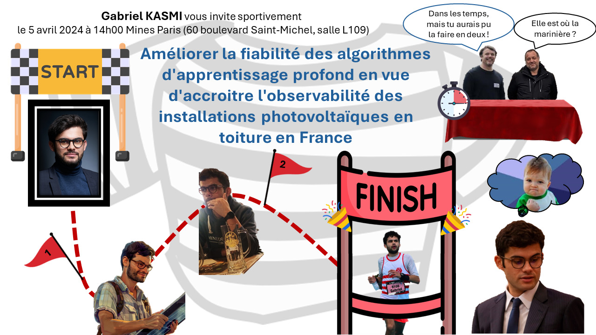

PhD Thesis
Introduction
Motivation and context
In the current organization of the electric system, the transmission system operator (TSO) is responsible for the balance between the load and supply of electricity. It requires to have access to real time measurements of the electric production. While for conventional electricity generation means, wind and hydro power, this does not pose any problem, photovoltaic (PV) energy is characterized by a great diversity of systems, ranging from large plants, which are telemetered, to small scale, distributed systems. These systems, generally located on rooftop and whose installed capacity is lower than 36 kWp, amount for 20% of the PV installed capacity and are poorly known by the TSO. This poor knowledge regarding small scale PV systems not only concerns power measurements, but also the knowledge regarding the actual fleet of systems (localization, individual installed capacity, system characteristics).
The rapid growth of PV energy in the context of the energy transition will increase the share of PV energy in the electric mix. To continue to ensure the stability of the grid, it will be necessary to increase the rooftop PV observability, i.e., the ability of the TSO to estimate the rooftop PV power with good accuracy. To this end, two steps are necessary: first increasing the knowledge of the rooftop PV fleet and second leveraging this registry to estimate the rooftop PV power production.
In recent years, numerous works leveraged deep learning and orthoimagery to construct registries of small-scale PV systems [1,2,3]. Among them, the DeepSolar project [4] was an important milestone as it was among the first works to construct a large-scale database of PV systems recording the surface and the localization of the systems.
Scientific question
Unfortunately, we cannot straightforwardly apply DeepSolar to France as we need more information on the PV systems than only the surface. As our goal is to estimate the PV power production, we need the installed capacity, tilt and azimuth angles of the PV systems, which are the minimal necessary information to estimate the PV power production [5].
The fundamental limit to deep learning-based methods such as DeepSolar is their sensitivity to distribution shifts, which leads to an unpredictable loss in accuracy if we were to apply the algorithm straightforwardly to France. This sensitivity to distribution shifts results in a lack of reliability of deep learning methods.
The central contribution of this work is therefore to introduce a framework intended to improve the reliability of deep learning algorithms intended to be used in critical industrial processes such as the remote sensing of rooftop PV systems. The scientific question addressed is the following: Is deep learning-based remote sensing on orthoimagery a suitable method for constructing a nationwide registry of rooftop photovoltaic (PV) installations intended to improve the observability of PV power production in France?
The three pillars of reliability
The framework for improving the reliability of deep learning-based algorithms is based on the following three pillars:
- Monitoring: as deep learning models can fail unpredictably, it is necessary to monitor their accuracy over they operational design domain (ODD, [6]), i.e., the data on which they are used in production. This evaluation is at most indirect, as by definition there is not labelled data on this domain.
- Auditing: we argue that it is necessary to gain intuition on how models work to be able to understand when they might fail and what the practitioner can expect from them. To this end, we leverage explainable AI (XAI) techniques. These methods enable to understand how model works, e.g., by shedding light on the important areas on an image for making a prediction.
- Robustness: when deployed in production, the input data will be subject to some alterations. While it seems hard to improve the robustness in general, we can at least identify the main source of variability in the input data and improve the model's invariance to such alterations.
Monitoring: the downstream task accuracy
With the monitoring, we aim at being able to keep track of the model's performance over its ODD. In our case, we trained a model on a training dataset and we deploy it over IGN orthoimages covering all France. Therefore, our ODD, which we call the mapping area is France.
The standard way of evaluating a model's accuracy is to compare its prediction against ground truth labels. Over France, we do not have such ground truth labels so instead we have to rely on the closest available data, which is the Registre national d'installations (RNI). The RNI indicates for each city the total number of installations and the cumulated installed capacity.
To monitor the accuracy of the registry with the RNI, we rely on unsupervised model evaluation methods [7]. These approaches consist in automatically comparing the outputs of the model with an external data source. In our case, we aggregate the detections of our detection model to obtain an estimation of the installed capacity and the number of installations. We then compare these estimations with the records of the RNI. We called this method the downstream task accuracy (DTA) as it enables to evaluate a model's accuracy according to metrics that are relevant for the downstream or final users: for instance, we can compute the average error in the estimation of the aggregated installed capacity, and derive metrics indicating whether the model locally overestimates or underestimates the aggregated installed capacity.
In [8], we leveraged the DTA to show that the performance of the model varies greatly during its deployment. We were also able to quantify the performance drop encountered by rooftop PV mapping algorithms which was highlighted by earlier works [9,10]. Deploying a model based on [3] and fine-tuned over France using the BDAPPV dataset [11], we documented a 30 percentage point accuuracy drop when shifting from the training dataset to the mapping area. The main question that arises is to understand why such performance drop occurs.
Auditing: the wavelet scale attribution method
The aim of this part is to assess whether the model detects PV panels for correct reasons. By correct, we mean that the model should detect PV panels by relying on relevant components on the image and not spurious factors (e.g. rooftop or nearby objects such as pools). To carry out this assessment, we initially relied on a class of feature attribution method called the Gradient Class Activation Map (GradCAM, [12]). This method highlights the areas on the input image that contributed the most to a model's decision.
The GradCAM was sufficient to reveal that the model does not rely on spurious factor and focuses where PV panels are located. However, it failed to explain false positives and false negatives. A thourought analysis of these failure cases led us to suppose that they were caused by the fact that the model relies on different scales, and that depending on whether patterns are present at different scales false predictions can arise.
In other words, to better understand why false prediction arise, we need to assess what does the model see on the input image and not only where it looks, as traditional feature attribution methods do. Towards this end, we introduced the wavelet scale attribution method (WCAM).
The WCAM builds on the sensitivity analysis method of [13]. This method consists in sampling random perturbation masks. In the original method, these masks are applied to the input image. The sensitivity of the model to the masks' perturbation is then recorded through the variation in the predicted probability. If the occluded area are not important for the prediction, the variation of the predicted probability is small, and if the variation is high, then it means that the occluded area was important. Importance is evaluated using Sobol's sensitivity analysis.
To highlight the important scales, we perturb the dyadic wavelet transform of the image instead of the image itself. The dyadic wavelet decomposition [14] consists in decomposing an image into different scales. As the wavelet transform is invertible, we can reconstruct a perturbed image from its perturbed wavelet transform. The model is evaluated on the perturbed image, but this time we can traceback the importance of the perturbations in the wavelet domain instead of the image domain.

The outcome of our approach is a heatmap in the wavelet domain. This representation highlights the important scales in the model's prediction. An interesting feature for the application to PV panel classification, the WCAM revealed that for a single spatial location (highlighted in standard feature attribution methods) the model relies on different scales. These scales correspond to structural elements such as details within the PV modules or the gridded pattern.

We used the WCAM to carry out analyses for explaining the false predictions. We highlighted the fact that false positives tend to arise when gridded pattern appear on the input image. On the other hand, in [15] we studied how the acquisition conditions disrupted some frequency ranges (which corresponded to scales) and could lead to false negatives.
Robustness: building DeepPVMapper
The analysis of the model's decision with the WCAM showed that the classification model relies on different scales. While dealing with the false positives is difficult, we can at least focus on the false negatives. In [15], we showed that the varying acquisition conditions contributed significantly in altering the model's performance during its real-life deployment.
To improve the robustness of the model to variying acquisition conditions, we introduced a new data augmentation technique, the wavelet perturbation. This method consists in altering the wavelet transform of the image to force the model to rely on a wide range of scales. Our aim is that if a scale is disrupted by the acquisition conditions, the model has learned to rely on other, less perturbed scales to make its prediction.
We compared our wavelet perturbation with other popular data augmentation methods aiming at improving the robustness of the model to image corruptions. We evaluated our method against AugMix [16], RandAugment [17] and AutoAugment [18] and achieved state-of-the-art results. Our benchmark dataset is BDAPPV [11]: we train a ResNet [19] model on Google images and evaluate its accuracy on IGN images depicting the same PV panel. This benchmark is a natural case study for varying acquisition conditions.

In addition to the robustness to varying acquisition conditions, we introduced PyPVRoof [20], a Python package for extracting the characteristics of rooftop PV systems. The motivation for introducing this package was that existing works lacked standardization: each method had its data requirements and the various method introduced, such as in [21,22,23] couldn't be compared. Our aim was to systematically compare existing approaches and to design a set of method that could be used in different cases in terms of data availability. Practitioners can use PyPVRoof to extract the tilt and azimuth angles, surface, installed capacity and localization of rooftop PV systems even if they have no other data than a geolocalized polygon, if they have 3D LiDAR data or access to limited information on PV systems.
The last step towards building DeepPVMapper was to provide a comprehensive benchmark of classification and segmentation models, evaluate the gains brought by the two-step approach introduced by DeepSolar and bring several improvements to the pipeline to minimize false detections and speed-up the computations. DeepPVMapper improves over existing works by being more robust to varying acquisition conditions, less prone to false detections and more flexible than previous works to extract the characteristics of PV systems as it accomodates for different cases of complementary data availability (e.g., 3D LiDAR data).
Assessing the impact on rooftop PV observability
We deployed DeepPVMapper over France to detect rooftop PV systems. As of April 2024, we deployed DeepPVMapper over 38 départements (covering nearly 175,000 km2) and record the tilt and azimuth angles of the systems, as well as their installed capacity, surface and pointwise localization. The area covered by DeepPVMapper is currently the world's second largest after DeepSolar [4] (who mapped rooftop PV systems over the continental United States) and the largest with this level of detail: [3] covered Northrine-Wesphalia (35,000 km2) with a similar level of details.

The registry enables us to address the first prerequisite to improve rooftop PV observability: improving the knowledge regarding the PV fleet. The second prerequisite is to be able to accurately estimate the PV power production of these systems. This is done in two steps. First, we use a conversion model (PVWatts, [24]), that takes as input the PV system's characteristics and solar irradiance data (coming from the Copernicus Atmospheric monitoring services (CAMS,[25])). The model outputs a load factor expressed in Wh/Wc. Second, we compare the estimation of the PV power production with ground truth PV yield time series. These time series come from BDPV. After data curation, we have about 900 records of PV power yields, covering all France.

We feed the conversion model with the PV system's parameters coming from DeepPVMapper. We compare this parameterization with the best possible parameterization, i.e., with ground truth parameters on the PV systems coming from BDPV. The estimation error is about 10% with a conversion model parameterized with DeepPVMapper and 8% with the Oracle. These results show that we need relatively few informations on the rooftop PV systems to derive fairly accurate estimations of their PV power production and that using a parameterization obtained with deep learning-based methods is a suitable approach as the resulting estimation of the PV power production is competitive with the first best.
Our approach consists in estimating the rooftop PV power production for each system. In practice, we have about a million systems to consider. Therefore, we need to consider the scalability of our approach. In particular, we need to ensure that there are no systematic biases in the estimation of the systems characteristics that could lead to an overall estimation error larger than the individual estimation error. We compared the behavior of the PV power estimation error of the oracle and with DeepPVMapper. The behavior of the error is the same for both parameterizations, indicating no evidence of potential biases in the estimation of the systems parameters with DeepPVMapper.
Conclusion
The scientific question was whether deep learning-based remote sensing on orthoimagery could be a suitable method for constructing a nationwide registry of rooftop photovoltaic (PV) installations intended to improve the observability of PV power production in France. More broadly, it raises the question of whether deep learning models are mature e nough to be safely used in industrial pipelines. This work's central contribution is identifying quality and dependability standards and proposing a methodology to verify that the deep learning model and the generated data meet these standards. The necessary conditions are the ability to monitor the model's data and to audit its decision process. Therefore, it is necessary to have complementary data and to define relevant KPIs against which the data produced by the deep learning model will be monitored. Standard feature attribution techniques are insufficient for auditing the model's decision as they do not assess what models see. Our WCAM provides a first step towards addressing this issue. Finally, having a robust and accurate model is desirable but insufficient to achieve the required level of trust in the data and the decision process, as user's trust comes from his or her ability to monitor the data and audit the model. Therefore, deep learning and Earth observation data are suitable because one has enough additional data to monitor the model during its deployment.
This work contributes to improving PV observability to the extent that it provides valuable additional information regarding the geographical distribution of small-scale PV systems. It also enables an accurate estimation of PV power production, but its relevance in an operational setting is questionable, as the model-based method does not significantly outperform alternative methods. Nonetheless, our assessment of the gains for improving rooftop PV observability can be complemented by collecting more reference data to empirically demonstrate our approach's greater accuracy compared to the TSO's current practices.
References
- Malof, J. M., Bradbury, K., Collins, L. M., & Newell, R. G. (2016). Automatic detection of solar photovoltaic arrays in high resolution aerial imagery. Applied energy, 183, 229-240.
- Kausika, B. B., Nijmeijer, D., Reimerink, I., Brouwer, P., & Liem, V. (2021). GeoAI for detection of solar photovoltaic installations in the Netherlands. Energy and AI, 6, 100111.
- Mayer, K., Rausch, B., Arlt, M. L., Gust, G., Wang, Z., Neumann, D., & Rajagopal, R. (2022). 3D-PV-Locator: Large-scale detection of rooftop-mounted photovoltaic systems in 3D. Applied Energy, 310, 118469.
- Yu, J., Wang, Z., Majumdar, A., & Rajagopal, R. (2018). DeepSolar: A machine learning framework to efficiently construct a solar deployment database in the United States. Joule, 2(12), 2605-2617.
- Saint-Drenan, Y. M., Bofinger, S., Fritz, R., Vogt, S., Good, G. H., & Dobschinski, J. (2015). An empirical approach to parameterizing photovoltaic plants for power forecasting and simulation. Solar Energy, 120, 479-493.
- Boisnard, F., Boumazouza, R., Ducoffe, M., Fel, T., Glize, E., Hervier, L., ... & Vigouroux, D. (2023). Guidelines to explain machine learning algorithms.
- Zhang, H., Fritts, J. E., & Goldman, S. A. (2008). Image segmentation evaluation: A survey of unsupervised methods. Computer vision and image understanding, 110(2), 260-280.
- Kasmi, G., Dubus, L., Blanc, P., & Saint-Drenan, Y. M. (2022). Towards unsupervised assessment with open-source data of the accuracy of deep learning-based distributed PV mapping. In MACLEAN: MAChine Learning for EArth ObservatioN Workshop co-located with the European Conference on Machine Learning and Principles and Practice of Knowledge Discovery in Databases (ECML/PKDD 2022)
- De Jong, T., Bromuri, S., Chang, X., Debusschere, M., Rosenski, N., Schartner, C., ... & Curier, L. (2020). Monitoring spatial sustainable development: semi-automated analysis of satellite and aerial images for energy transition and sustainability indicators. arXiv preprint arXiv:2009.05738.
- Malof, J. M., Li, B., Huang, B., Bradbury, K., & Stretslov, A. (2019). Mapping solar array location, size, and capacity using deep learning and overhead imagery. Preprint at https://arxiv. org/abs/1902.10895.
- Kasmi, G., Saint-Drenan, Y. M., Trebosc, D., Jolivet, R., Leloux, J., Sarr, B., & Dubus, L. (2023). A crowdsourced dataset of aerial images with annotated solar photovoltaic arrays and installation metadata. Scientific Data 10(1), 59.
- Selvaraju, R. R., Cogswell, M., Das, A., Vedantam, R., Parikh, D., & Batra, D. (2017). Grad-cam: Visual explanations from deep networks via gradient-based localization. In Proceedings of the IEEE international conference on computer vision (pp. 618-626).
- Fel, T., Cadène, R., Chalvidal, M., Cord, M., Vigouroux, D., & Serre, T. (2021). Look at the variance! efficient black-box explanations with sobol-based sensitivity analysis. Advances in neural information processing systems, 34, 26005-26014.
- Mallat, S. G. (1989). A theory for multiresolution signal decomposition: the wavelet representation. IEEE transactions on pattern analysis and machine intelligence, 11(7), 674-693.
- Kasmi, G., Dubus, L., Saint-Drenan, Y. M., & Blanc, P. (2023). Can We Reliably Improve the Robustness to Image Acquisition of Remote Sensing of PV Systems?. In Tackling Climate Change with Machine Learning workshop at NeurIPS 2023.
- Hendrycks, D., Mu, N., Cubuk, E. D., Zoph, B., Gilmer, J., & Lakshminarayanan, B. (2019). Augmix: A simple data processing method to improve robustness and uncertainty. arXiv preprint arXiv:1912.02781.
- Cubuk, E. D., Zoph, B., Shlens, J., & Le, Q. V. (2020). Randaugment: Practical automated data augmentation with a reduced search space. In Proceedings of the IEEE/CVF conference on computer vision and pattern recognition workshops (pp. 702-703).
- Cubuk, E. D., Zoph, B., Mane, D., Vasudevan, V., & Le, Q. V. (2018). Autoaugment: Learning augmentation policies from data. arXiv preprint arXiv:1805.09501.
- He, K., Zhang, X., Ren, S., & Sun, J. (2016). Deep residual learning for image recognition. In Proceedings of the IEEE conference on computer vision and pattern recognition (pp. 770-778).
- Trémenbert, Y., Kasmi, G., Dubus, L., Saint-Drenan, Y. M., & Blanc, P. (2023). PyPVRoof: a Python package for extracting the characteristics of rooftop PV installations using remote sensing data. arXiv preprint arXiv:2309.07143.
- Edun, A. S., Perry, K., Harley, J. B., & Deline, C. (2021). Unsupervised azimuth estimation of solar arrays in low-resolution satellite imagery through semantic segmentation and Hough transform. Applied Energy, 298, 117273.
- So, B., Nezin, C., Kaimal, V., Keene, S., Collins, L., Bradbury, K., & Malof, J. M. (2017). Estimating the electricity generation capacity of solar photovoltaic arrays using only color aerial imagery. In 2017 IEEE International Geoscience and Remote Sensing Symposium (IGARSS) (pp. 1603-1606). IEEE.
- Rausch, B., Mayer, K., Arlt, M. L., Gust, G., Staudt, P., Weinhardt, C., ... & Rajagopal, R. (2020). An enriched automated PV registry: Combining image recognition and 3D building data. arXiv preprint arXiv:2012.03690.
- Dobos, A. P. (2014). PVWatts version 5 manual (No. NREL/TP-6A20-62641). National Renewable Energy Lab.(NREL), Golden, CO (United States).
- Qu, Z., Oumbe, A., Blanc, P., Espinar, B., Gesell, G., Gschwind, B., ... & Wald, L. (2017). Fast radiative transfer parameterisation for assessing the surface solar irradiance: The Heliosat-4 method. Meteorologische Zeitschrift, 26(1), 33-57.
Contributions
Through this PhD, I made contributions in machine learning and explainable AI, with the introduction of the wavelet scale attribution method (WCAM) and new feature attribution method. I also made contribution in power systems with the introduction of a new algorithm for mapping rooftop PV systems (DeepPVMapper) and the associated database, which is currently the world largest with this level of detail.
The following table summarizes the contributions made during this thesis:
| Authors | Title | Year | Publication type |
|---|---|---|---|
| Kasmi, G., Saint-Drenan, Y. M., Trebosc, D., Jolivet, R., Leloux, J., Sarr, B., & Dubus, L. | A crowdsourced dataset of aerial images with annotated solar photovoltaic arrays and installation metadata | 2023 | Journal |
| Kasmi, G., Dubus, L., Blanc, P., & Saint-Drenan, Y. M. | Towards unsupervised assessment with open-source data of the accuracy of deep learning-based distributed PV mapping | 2022 | Conference workshop |
| Kasmi, G., Dubus, L., Saint-Drenan, Y. M., & Blanc, P. | Assessment of the Reliablity of a Model's Decision by Generalizing Attribution to the Wavelet Domain | 2023 | Conference workshop |
| Kasmi, G., Dubus, L., Saint-Drenan, Y. M., & Blanc, P. | Can We Reliably Improve the Robustness to Image Acquisition of Remote Sensing of PV Systems? | 2023 | Conference workshop |
| Trémenbert, Y., Kasmi, G., Dubus, L., Saint-Drenan, Y. M., & Blanc, P. | PyPVRoof: a Python package for extracting the characteristics of rooftop PV installations using remote sensing data | 2023 | Preprint |
| Kasmi, G., Touron, A., Blanc, P. Saint-Drenan, Y.-M., Fortin, M.,& Dubus, L. | Enhancing regional PV power estimation using physics-based models, solar irradiance data and deep learning | 2023 | Conference oral |
Manuscript and slides
The manuscript and the slides are now accessible ! The manuscript is available here and the slides here.